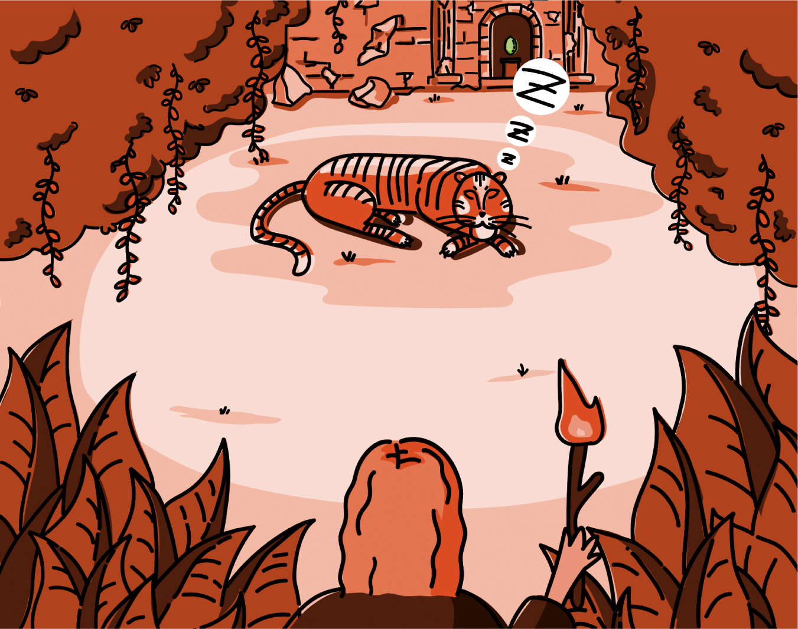
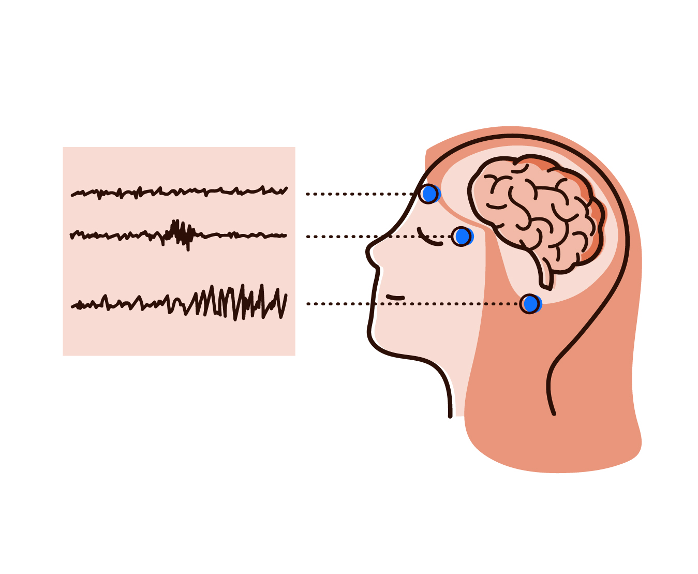

Journey to Recovery
Making a sleep therapy more motivating, entertaining and Informative for children.
Interaction Design Bachelor Project by Claudia Buck & Randy Chen

About
In a medical treatment that improves the quality of sleep, children lose interest as the therapy proceeds. Each day, they face tedious and repetitive tasks. Our solution creates a child-friendly experience, using a captivating story to motivate, entertain and educate children along their journey.
Partner
We collaborated with a research team from ETH Zurich and the University of Zurich, called SleepLoop. SleepLoop intends on improving sleep of people in various stages of life from childhood to old age with the help of their mHealth head wearable. While sleeping, the sleep device tracks the brain activity and emits an auditory tone right when the brain’s neurons are synchronised. This stimulus leads to patients having a deeper and thus higher quality of sleep.
Concept
Our concept encompasses the idea of combining medicine with a captivating story. It comes in the form of a companion app in which the child can unlock and enjoy daily chapters by completing the medical questionnaire and following the instructions for using the wearable. At the core of our concept lies the understanding that the treatment is seen as a journey.
Story
Each evening, the patient child can go on an narrative adventure in which they travel to a jungle where they meet a great tiger; climb a mountain amidst a snowstorm or explore a dreamless world. These narrative evening chapters are intended to foster motivation as a form of unpredictable, variable rewards. As such, the child can look forward to the next time they need to put on the sleep device.

Education
Throughout their journey, the children will learn more about sleep in general. Every morning, they receive facts about sleep which refer to the previous narrative chapter. Together with the SleepLoop team, we've decided to give the children the opportunity to learn more about sleep rather than focusing on their performance which could cause stress for the child. Thereby, we hope to encourage a healthy sleep behavior beyond the treatment.
Augmented Reality
By using Augmented Reality, we are guiding the patient to put on the sleep device correctly by indicating where to place the electrodes. Furthermore, we have added Augmented Reality within the story in order to create a more immersive experience. As such, they will need to choose a costume in order to trick the great tiger or dive underwater.

{kind=link}
{kind=link}
{kind=link}
{kind=link}
{kind=link}
Why an app?
For one, smartphones are familiar objects, while on the other hand, the sleep device is not: it is something people need some time to become accustomed to. Instead of presenting the user with two unfamiliar objects, we found it best to have the companion be something they are more used to.
The therapy relies on an instant relaying of information between the patient and SleepLoop: both need to send and receive information in form of patient information and status updates.
We are aware of the effects that blue LED light has on sleep. This is why we used an orange and red colour palette which resorts to the warmer light spectrum.{kind=link}
Process
To us it was important that each party involved – children, researchers and doctors alike – should have a say in our process. Through co-creation, we've worked together to develop various ideas and solutions. We started off by visiting primary classes and handing out culture probes, then continued our collaboration through workshops, both offline and online. From their creativity, we found some great inspiration which ultimately led to the final design of our concept.
{kind=link}
workshops
As part of our collaborative approach, we conducted various workshops. With SleepLoop we used Design Thinking methods to identify priorities and to generate initial ideas. With the children, we brainstormed playful storylines and creative content for the app.
{kind=link}
{kind=link}
{kind=link}
Design Iterations
We went through several iterations before reaching the final designs. As such, for the home screen we explored how to visually differentiate between the evening and the morning chapters. Ultimately, we took inspiration from the celestial paths of the moon and sun to act as a toggle switch.
{kind=link}
Who are we?
We are Claudia Buck and Randy Chen, two Interaction Designers from Zurich, Switzerland. “Journey to Recovery” is our Bachelor Project for Interaction Design at the Zurich University of the Arts ZHdK.

Special Thanks
Dr. Joëlle Bitton & Verena Ziegler – our BA mentors: for their help and mentoring sessions. Big thank you to Verena and her daughters for accompanying us during our collaborative process SleepLoop – our partners: for being so open towards our creative collaboration Nicole Foelsterl & Matthias Kappeler – for their guidance for our concept video Jenny Steinmann – for helping us get in contact with teachers and their classes The Teachers & Students from Primarschule Feldhof & Berufswahlschule Uster – for welcoming us into their classes and for taking part in our workshops and cultural probes Heike Reuss & Her Two Daughters / Jane Oertle & Her Son – for participating in our online storytelling workshop Nina Eiber & Her Daughter & Son – for user testing our prototypes and for lending us their voices for the concept video Our IAD Class (2017) – for keeping us sane during the Coronavirus lockdown Martin Dušek – the man behind the scenes: for coordinating and supporting the Interaction Design Bachelor